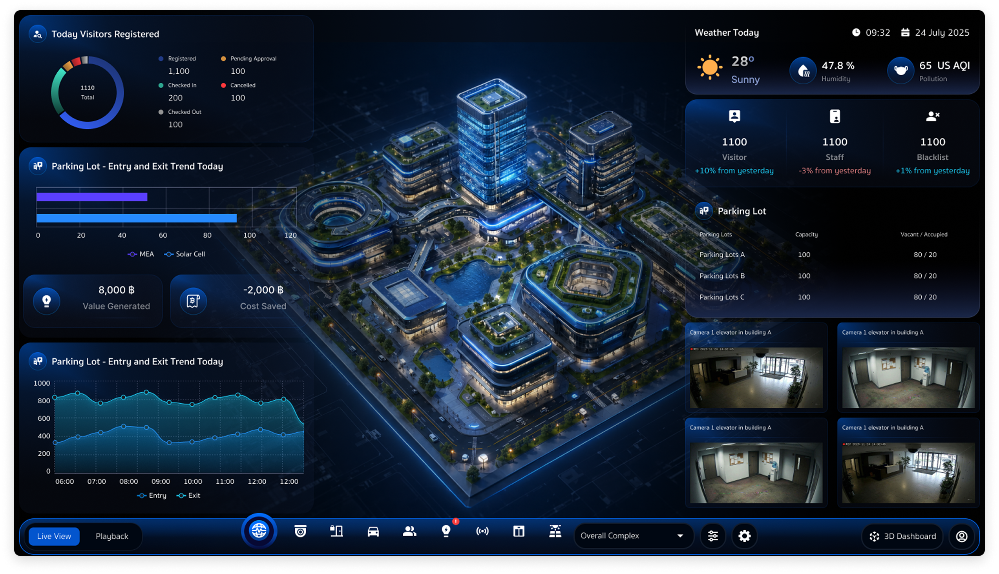
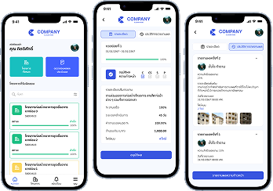
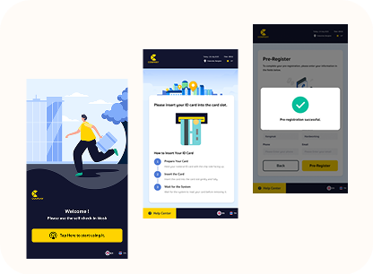
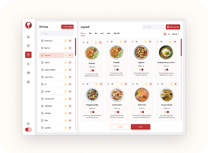
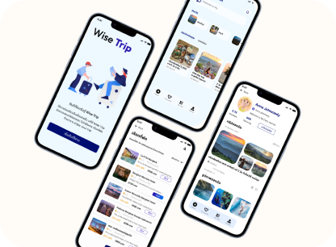
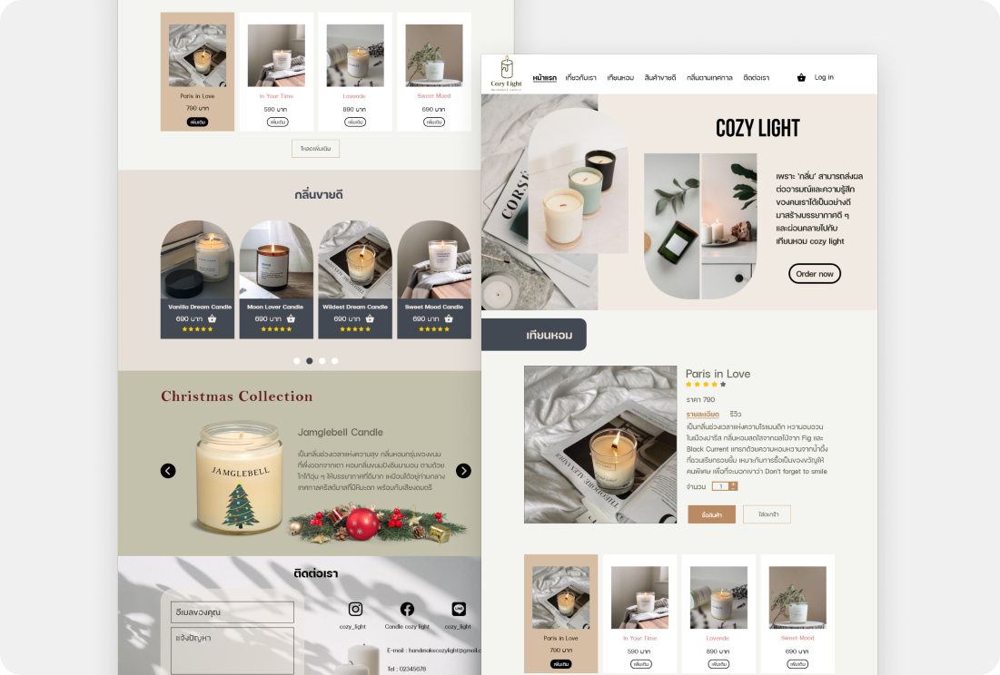
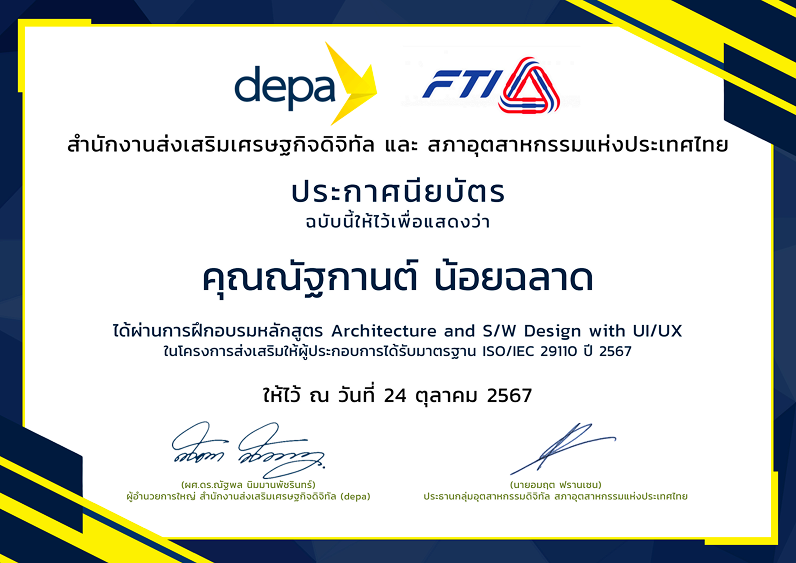
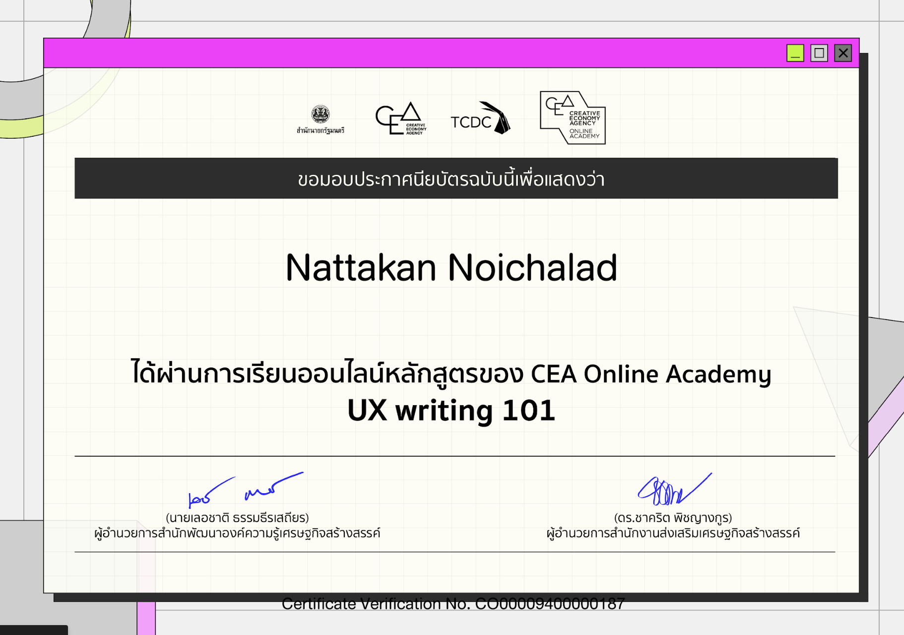
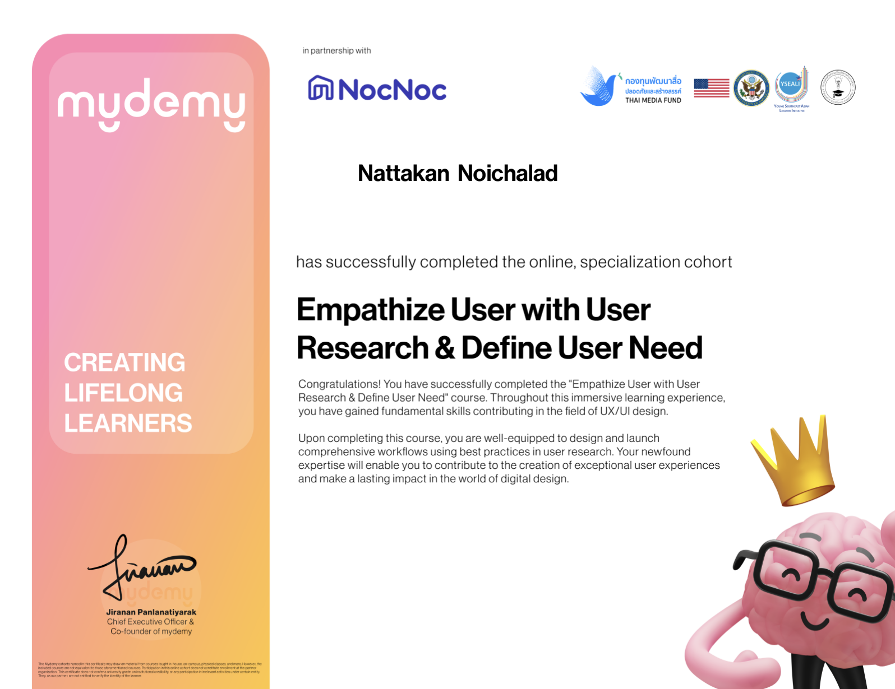

3D Security Monitoring Dashboard
Simplifying real-time security monitoring for faster decision-making

UX/UI Designer focused on security systems, turning complex workflows into simple and intuitive user experiences.
Selected case studies showcasing how I simplify complex systems through UX design.
Simplifying real-time security monitoring for faster decision-making

Simplified complex workflows for field teams Improved task completion visibility

Reducing user confusion during self-service check-in

Simplifying menu management for restaurant staff

Simplifying Trip Planning Through Personalized Recommendations and Smart Matching

Simplifying Trip Planning Through Personalized Recommendations

UX/UI Designer focused on security and enterprise systems, with a passion for simplifying complex workflows into clear and intuitive user experiences. I enjoy turning data-heavy platforms into usable and efficient interfaces that improve everyday operations.
May 2024 - Mar 2026
December 2023 - April 2024
A collection of courses and certifications that support my growth as a UX/UI Designer.



I’m a UX/UI Designer with experience in designing complex systems, currently open to exploring a wide range of digital products and challenges
Get in Touch